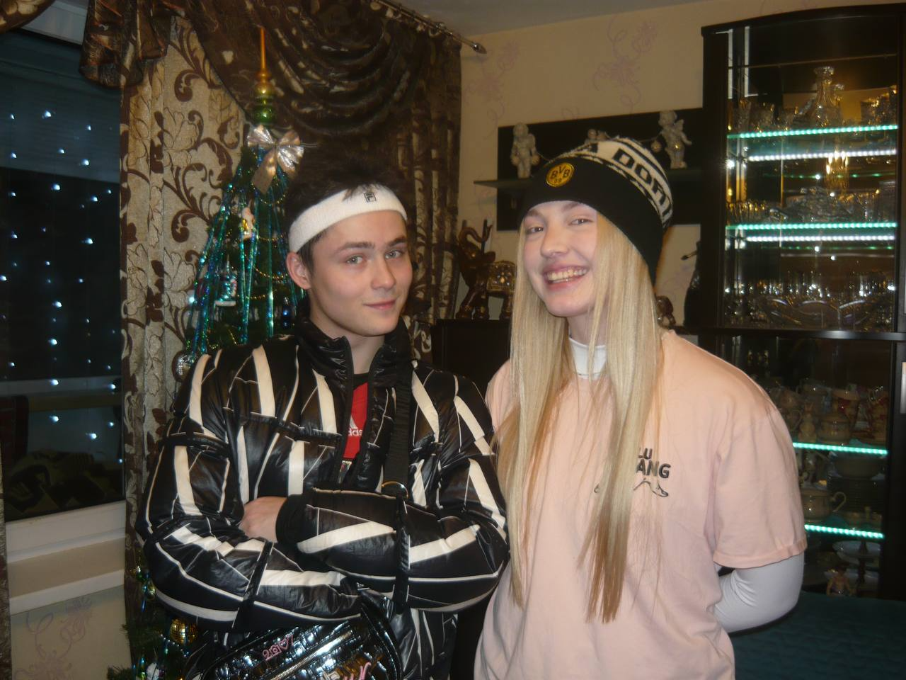
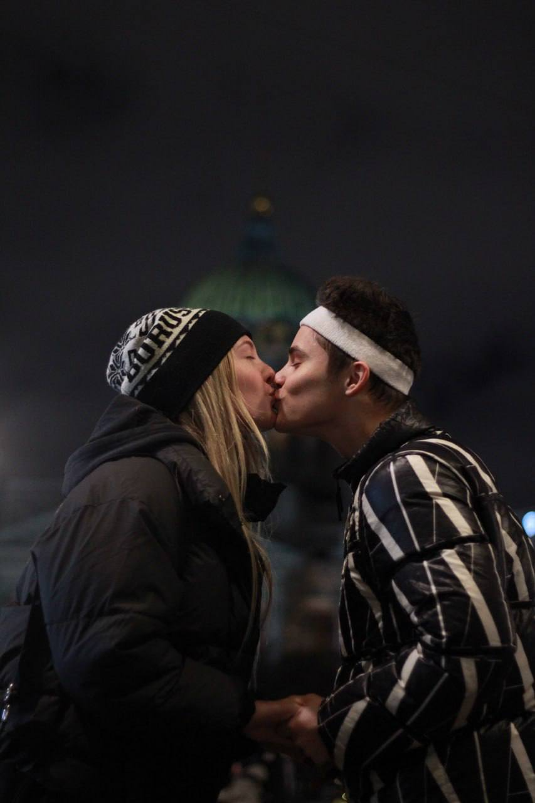

Наше первое совместное фото

Наша годовщина

Наша поездка в Питер

Встреча после долгой разлуки

Поездка на дачу
Ванька, мы уже целый год вместе! Я тебя очень сильно люблю и спасибо, что ты рядом, несмотря на весь негатив, который нас окружает. Я хочу посветить этот сайт нам с тобой и в каждую годовщину мы будем дополнять его фотографиями. Я очень хочу построить с тобой счастливую семью и в старости смеяться со всего этого и радоваться нашим внукам. Спасибо, что ты есть у меня.
Ванька, мы стали часто ругаться( это очень печально, ведь я тебя сильно люблю. Я надеюсь, у нас получится это всё решить и у нас всё будет хорошо! Ты мой единственный близкий человек, и я не хочу тебя терять. Люблю тебя, сурок 💗